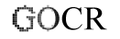

GOCR
Dieser Artikel wurde für die folgenden Ubuntu-Versionen getestet:
Ubuntu 16.04 Xenial Xerus
Ubuntu 14.04 Trusty Tahr
Zum Verständnis dieses Artikels sind folgende Seiten hilfreich:

GOCR  ist ein Kommandozeilenwerkzeug zur Texterkennung, das seit 2000 von Joerg Schulenburg
ist ein Kommandozeilenwerkzeug zur Texterkennung, das seit 2000 von Joerg Schulenburg  / entwickelt wird. Das Programm ist "trainierbar" und vielfältig zu konfigurieren; gute Ergebnisse werden vor allem für serifenlose Schriften erzielt. Dabei handelt es sich um ein reines Zeichenerkennungsprogramm, das sprachen-unabhängig arbeitet. Mit GOCR tcl existiert auch eine grafische Benutzeroberfläche, die allerdings nicht ganz auf dem aktuellen Stand ist. Standardmäßig verwendet XSane GOCR als Texterkennungsprogramm, mit OcrGui können einige der Optionen in einer grafischen Oberfläche verwendet werden. Viele OCR-Frontends können GOCR einsetzen (z.B. ocrodjvu, OCRFeeder, gscan2pdf).
/ entwickelt wird. Das Programm ist "trainierbar" und vielfältig zu konfigurieren; gute Ergebnisse werden vor allem für serifenlose Schriften erzielt. Dabei handelt es sich um ein reines Zeichenerkennungsprogramm, das sprachen-unabhängig arbeitet. Mit GOCR tcl existiert auch eine grafische Benutzeroberfläche, die allerdings nicht ganz auf dem aktuellen Stand ist. Standardmäßig verwendet XSane GOCR als Texterkennungsprogramm, mit OcrGui können einige der Optionen in einer grafischen Oberfläche verwendet werden. Viele OCR-Frontends können GOCR einsetzen (z.B. ocrodjvu, OCRFeeder, gscan2pdf).
Installation¶
GOCR ist in den Paketquellen vorhanden, es müssen die Pakete
gocr (universe)
gocr-tk (universe, optional, grafische Oberfläche)
 mit apturl
mit apturl
Paketliste zum Kopieren:
sudo apt-get install gocr gocr-tk
sudo aptitude install gocr gocr-tk
installiert[1] werden.
Manuelle Installation¶
Dei aktuellste Version von GOCR kann man von der Downloadseite des Projektes beziehen. Dazu das .tar.gz-Archiv herunterladen, entpacken [4] und kompilieren[5]. Der Quellcode enthält auch die grafische Oberfläche, sodass die Installation des Paketes gocr-tk nicht nötig ist. Die Oberfläche wird dann allerdings mit dem Befehl gocr.tcl aufgerufen.
Funktionsweise¶
GOCR lädt zunächst das gesamte Bild in den Arbeitsspeicher; empfohlen wird die Verwendung von Bilder in Graustufen, Auflösung 300 dpi. Zunächst wird "Staub" und Rauschen entfernt. Danach versucht GOCR, Linien, die nicht horizontal verlaufen, zu erkennen. Es folgt das Auffinden der Textrahmen (Option -m 4), der Textzeilen und dann der einzelnen Zeichen. Erst dann erfolgt der erste Schritt der Erkennung, für jedes Zeichen ein eigener empirischer Vorgang; es werden keine "neuralen Netzwerke" oder ähnliche Algorithmen verwendet. Nicht erkannte Zeichen werden über Vergleiche mit erkannten analysiert; außerdem versucht GOCR, zusammenhängende Zeichen (z.B. Ligaturen) zu trennen. Optional werden "einheitliche" Muster aus den einzelnen als gleich erkannten Zeichen erstellt (Option -m 64), um diese weiter zu verwenden.
Bedienung¶
Die allgemeine Syntax auf der Kommandozeile[2] lautet
gocr [OPTION] [-i] pnm-Datei
Wenn gzip, bzip2 und netpbm installiert sind (was unter einer Standard-Ubuntu-Installation der Fall sein sollte), werden auch pnm.gz, pnm.bz2, png, jpg, jpeg, tiff, gif, bmp, ps (nur einseitige Dateien) und eps als Eingabedateiformate unterstützt, außerdem kann pnm auch durch ppm, pgm und pbm repräsentiert sein. Die Daten können dabei allerdings nur als Dateien eingelesen, nicht wie für Ocrad via Pipe "gestreamt" werden.
Als Ausgabeformate sind ISO8859_1, TeX, HTML, XML, UTF8 (Standard) und ASCII möglich; XML gibt dazu die jeweilige Position der Zeichen, sowie die Häufigkeits-Daten mit aus (Option -f [Format])
Optionen¶
GOCR kann durch vielfältige Optionen gesteuert werden. So kann beispielsweise gleich Staub, etc. entfernt werden (-d), das Ausgabeformat festgelegt (-f), oder ein Schwellwert für die Festlegung der zum Text/Hintergrund zugehörigen Pixel bestimmt werden (-l).
| GOCR-Optionen | ||
| Option | Funktion | |
-i [NAME] | Bilddatei, "-" um stdin zu verwenden | |
-o [NAME] | Ausgabedatei (Umlenkung der Standardausgabe in eine Datei) | |
-f [FORMAT] | Ausgabeformat, möglich sind ISO8859_1, TeX, HTML, XML, UTF8 (Standard) und ASCII | |
-a [WERT] | Wert für die Sicherheit der Zeichenerkennung; möglich sind 0-100, Standard ist 95, je höher der Wert desto weniger "Varianz" wird zugelassen | |
-e [NAME] | Ausgabedatei (Umlenkung der Fehlerausgabe in eine Log-Datei) | |
-x [NAME] | Fortschrittsanzeige (Datei, fifo oder fd=1..255 , siehe fd) | |
-p [NAME] | Verzeichnis der optionalen Datenbank (Standardpfad: ~./db/) | |
-l [WERT] | Schwellenwert 0<160<=255 zur Festlegung der Helligkeit welche Pixel als Text, welche als Hintergrund betrachtet werden sollen (0 = autodetect, Standardeinstellung) | |
-d [WERT] | Schmutzgröße in Pixel, Entfernen von Schmutz in Clustern kleiner dieser Angabe (-1=autodetect, Standardeinstellung) | |
-s [WERT] | Wortabstand in Punkten, kleinere Abstände werden als Buchstabenabstände innerhalb eines Wortes interpretiert (0 = autodetect, Standardeinstellung) | |
-u [ZEICHEN(FOLGE)] | Zeichen(folge) für nicht erkannte Zeichen einsetzen (Standard ist "_") | |
-v [WERT] | Ausgabe von mehr Informationen, die Werte werden für die Verwendung mehrerer Einstellungen summiert, möglich sind | |
1 | mehr Informationen | |
2 | Größe der Boxen anzeigen (siehe -c) | |
4 | Boxen anzeigen (siehe -c) | |
8 | Ausgabe der Muster nach Erkennung | |
16 | Zeilenerkennung ausgeben | |
32 | debug-Ausgaben in Form von outXX.pgm-Bildern mit hervorgehobenen Rahmen und Zeilen für jeden relevanten OCR-Schritt | |
-c [ZEICHEN(FOLGE)] | Liste der auszugebenden Zeichen ("_" = nicht erkanntes Zeichen), um die Ausgabe z.B. für Trainingsläufe auf die benötigten "Problem"-Zeichen zu beschränken | |
-C [ZEICHEN(FOLGE)] | Zeichenfilter (z.B.: hexdigits: 0-9A-Fx, nur ASCII) | |
-m NUM | Arbeitsarten, möglich sind | |
2 | Datenbank nutzen | |
4 | Layout-Analyse (zum Testen) | |
8 | Kein Vergleich nicht erkannter Zeichen | |
16 | Kein Teilen "verklebter" Zeichen | |
32 | Keine Kontextkorrektur | |
64 | Zeichen komprimieren, aus mehreren gleichen Zeichen wird nur eine Version weiterverwendet | |
130 | Datenbank erweitern (unbekannte Zeichen bestimmen, interaktive Methode mit Eingaben des Nutzers) | |
256 | OCR-Engine abschalten, nur sinnvoll mit -m 2, bei Verwendung einer Datenbank oder bei komplettem Neutraining | |
-h | Hilfe | |
Weiteres in der Manpage des Programms, oder den Dateien /usr/share/doc/gocr/doc/gocr.html und /usr/share/doc/gocr/README (beide Dateien in englisch).
Grafische Oberfläche¶
Die grafische Oberfläche wird über den Befehl gocr-tk, ggf. auch gocr.tcl gestartet. Sie ermöglicht es, den erkannten Text in einem einem Editor-ähnlichen Fenster zu bearbeiten. Über "Browse" lässt sich die zu bearbeitende Vorlage öffnen, mit "Run it" wird die Texterkennung gestartet. Im Hauptfenster erscheint dann das Ergebnis, das dort auch korrigiert werden kann. Gespeichert wird das Ergebnis über "File -> Save output".
Die Rechtschreibfunktion ("Spell") ist allerdings unter aktuellen Ubuntu-Versionen nicht mehr zum Einsatz zu bewegen, sie basiert auf ispell , und dem Perl-Programm tkispell , das sich zwar noch kompilieren lässt, aber nicht mehr einsatzfähig ist (letzte bekannte Version 0.18 von März 2004). Ähnliche gilt für das standardmäßig vorgesehene Betrachterprogramm xli ("Show") - es befindet sich zwar noch in den Paketquellen, allerdings liefert es keine brauchbaren Bilder der zu verarbeitenden Bild-Dateien. In den Konfigurationseinstellungen kann aber jeder Bildbetrachter ("Image Viewer") angegeben werden. "Scan" öffnet XSane (wenn es installiert ist), allerdings wird ein Scan nicht sofort integriert, sondern muss erst gespeichert, und dann über "Browse" aufgerufen werden.
Konfiguration¶
Über "Options -> Set Options" wird das Konfigurationsfenster geöffnet, in dem die zu verwendenden Optionen eingestellt werden können; für "spacewidth" (-s), "graylevel" (-l) und "dustsize" (-d) existieren Schieberegler ("auto" dafür deaktivieren!). "See variables" zeigt die eingestellten Werte unterhalb des Hauptfensters an. Mit "Options -> Save Options" wird eine Konfigurationsdatei in ~/.gocr abgelegt, es lassen sich auch mehrere Konfigurationen abspeichern, die mit "Options -> Load Options" wieder aufgerufen werden können. Bei der Erkennung werden zunächst durch die Optionen bedingte zusätzlichen Angaben im Fenster angezeigt, die eigentliche Texterkennung wird als letzter Schritt ausgegeben.
GOCR trainieren¶
Um nicht erkannte Zeichen zu integrieren, kann für GOCR eine Datenbank angelegt werden, die Beispiele dieser Zeichen enthält, sie wird unter dem Pfad ~/.db/ erwartet. Erstellt werden können derartig Einträge über die Option -m ("operational mode"), -m 130 führt dabei zu einem interaktiven Modus, in dem Angaben zu nicht/falsch erkannten Zeichen gemacht werden können, die dann in die Datenbank (db.lst) aufgenommen werden. Dieser Artikel aus EasyLinux, 2/2009, beschriebt den Vorgang ausführlich. Theoretisch kann so auch ein komplett neuer Zeichensatz, der auch unterschiedlichen Schriftarten enthalten kann, erstellt werden.
Die Verwendung der Datenbank erfolgt dann über die Optionen -m 2 und -p, der abschließende Slash, z.B. -p /home/<benutzer>/.db/ ist dabei mit anzugeben! Wenn nur auf die Datenbank zurückgegriffen werden soll, muss die Verwendung des OCR-Engines mit -m 256 abgeschaltet werden, die Erkennung kann dann aber sehr zeitaufwändig werden.
Links¶
GOCR
auf sourceforge.netKurzanleitung
zum TrainierenOnline-OCR-Service
, der GOCR als Engine verwendet
- Erstellt mit Inyoka
-
 2004 – 2017 ubuntuusers.de • Einige Rechte vorbehalten
2004 – 2017 ubuntuusers.de • Einige Rechte vorbehalten
Lizenz • Kontakt • Datenschutz • Impressum • Serverstatus -
Serverhousing gespendet von